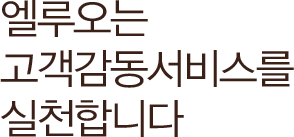

엘루오는 고객의 마음을 프로페셔널한
자세와 진정성으로 열어
다가가도록 하겠습니다
디지털 컨버전스 시장을 선도하는 서비스 구축에 모든 역량을 발휘합니다
빠르게 변화하는 시장 흐름과 비즈니스 핵심 니즈를 발굴하는데 누구보다 선두에 서 있다고 자부합니다.
엘루오는 인간에 대한 이해와 통찰을 바탕으로 비즈니스를 이해하고 새로운 혁신의 정신으로 창의적인 생각과 기술을 접목한 서비스를 구현하는데 끊임없이 변화해 나
가며 비즈니스 마케팅, 브랜딩, 컨텐츠 유통, 웹 서비스 개발 등에 이르는 다양한 분야의 차별화된 컨설팅 & 개발 서비스를 제공합니다.
- 내·외부 환경분석을 토대로 비즈니스 전략,
핵심과제의 구체적 실행방안을 제시함으로써
경쟁력 있는 비즈니스 기회 발굴
- 비즈니스 및 고객 측면의 사용자
니즈를 예측하고 수용하는 전략과 정책
정의를 비롯한 브랜딩, 서비스 디자인
,
마케팅 전략 제시
- 서비스를 이용하는 고객의 모든
접점에서 경험하는가치를 창의적으로
디자인하여 매력적인 사용자 경험 제공
- 웹 표준화, 웹 접근성을 기본으로 다양한
프레임워크를 개발 및 수용하여 플랫폼의
확장성과 효율성을 담보하는 개발 프로세스
및 서비스 마인드 보유
엘루오가 함께 하는 것은 대행이 아닌 ‘파트너’로서 함께 나아가는 일입니다
사이트는 발전하는 유기체로 진정한 운영은 ‘발전&진화’해 나아가는 데 그 의미가 있습니다. 서비스 운영 파트너 엘루오는 이 과정 속에서 비즈니스 오너쉽을 고객과
함께 키워가고 성공과 신뢰를 바탕으로 한 엘루오만의 운영노하우를 쌓아왔습니다. 오너쉽을 갖춘 운영 전문 인력과 비즈니스를 함께 하는 파트너쉽을 기반으로 한
기업 마인드, 함께 함으로써 이루어내는 성공의 기본, 소통의 자질을 갖추는 등 전문적인 IT OUTSOURCING 및 시스템 운영 서비스를 제공합니다.
- 오너쉽을 갖춘 운영 전문인력
- 함께 함으로써 이루어내는
성공의 기본, 소통
- 비지니스를 함께 하는 파트너쉽을
기반으로 한 기업 마인드
사람과 문화 중심의 철학과 통찰을 기반으로 디자인합니다
엘루오는 변화하는 디지털 세상과 상호 작용하는 방법을 이해합니다. 사용자의 마음을 깊이 파고드는 통찰력과 연구결과 분석을 기반으로 한 UX 컨설팅 서비스를
제공하며, 실행에 있어 고객 니즈에 확실성을 제공하여 성공으로 이끄는 것이 엘루오의 미션입니다. 다양한 비즈니스 과제로 디지털 경험을 수없이 고민하고
시도한 통찰력과 전략을 제공합니다.
-
사용자 리서치를 바탕으로
사용자 니즈 발굴 및 인사이트 제공
- BUSINESS/USER REQUIREMENTS
- USER TESTING
- IN-DEPTH INTERVIEWS
- FOCUS GROUP RESEARCH
-
고객 비즈니스 디지털 플랫폼에
필요한 통찰력과 전략 제공
- VISIONING AND IDEA GENERATION
- PROJECT PLANNING
- GOVERNANCE FRAMEWORKS
- CONTENT STRATEGY
-
사용자 행위를 바탕으로 작업절차 및
화면의 흐름과 작동성 디자인
- INFORMATION ARCHITECTURE (IA)
- CARD SORTING
- CONTENT CREATION
- WIREFRAMES
-
웹 표준화 및 최적의 접근성을 위한
컨설팅에서 인증마크 획득에 이르는 실행
- WEB STANDARDS
- WEB ACCESSIBILITY CONSULTING
- WEB/MOBILE ACCESSIBILITY
- ACCESSIBILITY CERTIFICATION MARK
모바일 세상을 선도하는 서비스 구축에 모든 역량을 발휘합니다
이제 모든 비즈니스의 중심에는 모바일이 있습니다. 모바일 시장에서 트렌드를 선도하고 모바일 사용자 경험에 대한 이해를 기초로 모바일 UX 및 컨텐츠 전략을
함께 제시해 드립니다. 또한 높은 기술력의 다양한 플랫폼별 모바일 웹/앱 개발을 통해 고객 비즈니스가 모바일 시장에서 경쟁 우위를 확보하고 새로운 기회를
창출할 수 있도록 도와 드립니다
- Service Platform
-
모바일 서비스 환경 구축, 시스템
연동 및 통합 서비스 플랫폼 구축
- Mobile Consulting
-
모바일 트렌드 분석을 통한
모바일 비즈니스 성공 전략 및 시스템
전략 제시
- Mobile Development
-
모바일 포털을 비롯한 유무선 연동
개발 및 표준 인터페이스 개발